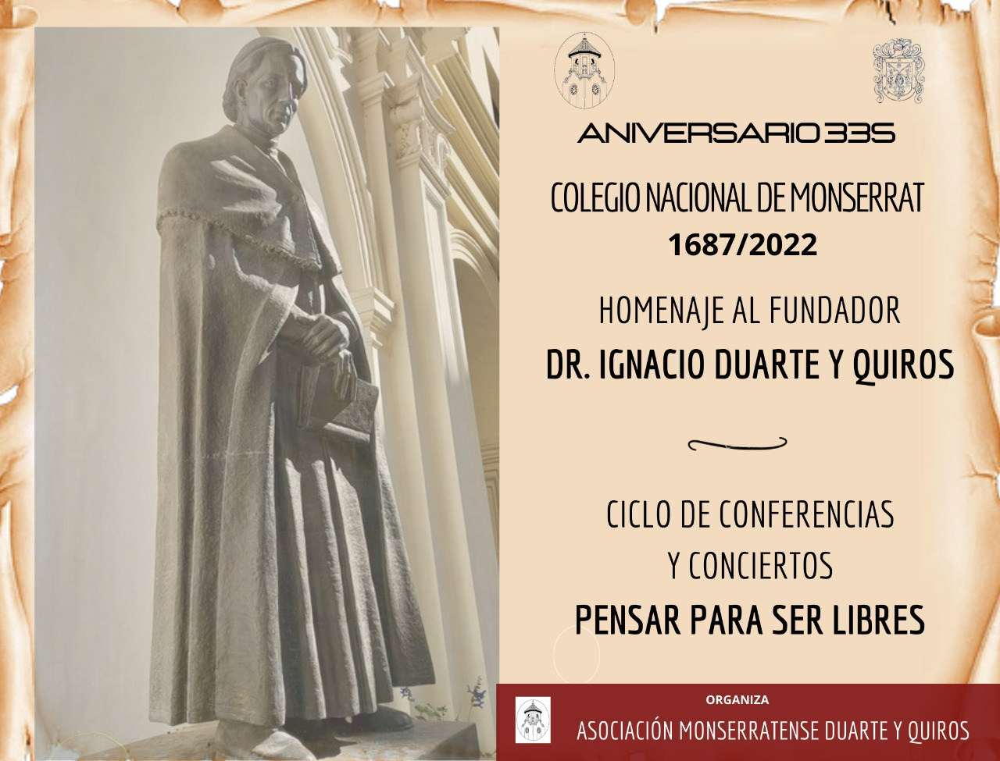

Todo lo que pasa en la comunidad monserratense

A partir del mes de mayo, quienes hayan completado el formulario de inscripción tendrán a disposición su tarjeta personalizada como socio. Conocé los detalles sobre las clases de socios, beneficios de la Red LIBER y cómo acceder nuevamente al Colegio.
Leer nota completa →



Comunidad Monserratense
Cada egresado que se asocia fortalece la red, amplía los proyectos culturales y sostiene el legado humanista del Monserrat. Ser parte es hacer que todo esto sea posible.